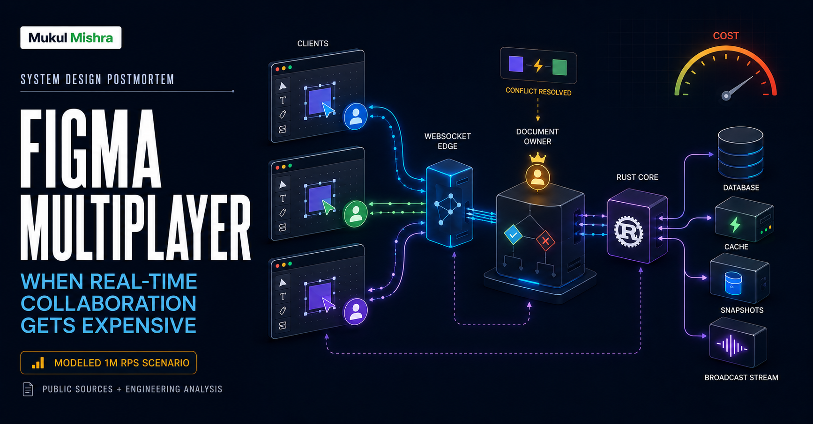

1. The Moment a Rectangle Became a Distributed System
Most software can tolerate a little delay. A design canvas cannot. When a designer drags a rectangle, the rectangle is expected to move now, not after a committee meeting between three availability zones. When a second designer changes the fill color, both people should see it immediately. When the Wi-Fi dies, the work should not evaporate into the same digital void as every unsaved university assignment.
Figma's product is therefore a collaboration system disguised as a drawing tool. Its clients are browser applications connected to servers over WebSockets. A document is a tree of objects. Every object has properties: position, size, color, text, parent, order. Clients apply edits optimistically, send them to the server, and receive the canonical stream back.
The hard question is not how to send JSON quickly. It is what happens when two people edit the same property, when one person is offline for an hour, or when a tree move creates a cycle. At that point, “real-time collaboration” stops being a feature and becomes a dispute-resolution institution with a latency budget.
2. Why Figma Is a Better Autopsy Than Another AI Wrapper
Figma crossed the billion-dollar scale in a way that leaves a useful paper trail. It raised venture funding, was valued at $10 billion in its 2021 financing, survived the collapse of Adobe's proposed $20 billion acquisition, and went public in 2025. Its final IPO prospectus reported 2024 revenue of $749 million and 2025 filings reported roughly $1.06 billion in revenue. This is no longer a tiny collaboration demo with a heroic README.
More important for engineers, Figma published the decisions that made its multiplayer system work. The company rejected Operational Transformation for the document model, did not adopt a pure peer-to-peer CRDT, and used server-authoritative ordering with last-writer-wins behavior at the property boundary. It kept network handling in Node.js, moved performance-sensitive document operations into Rust, and ran a separate process per active document.
Those are not fashionable choices. They are constrained choices. The architecture says something valuable: distributed systems are not a contest to use the most complicated noun. They are a contest to preserve the product's actual invariants while refusing to pay for imaginary ones.
3. The Architecture: One Document, One Owner, Many Witnesses
The core multiplayer model is surprisingly direct. When a document opens, the client downloads a copy and connects to the process that owns that document. Updates travel both ways over a WebSocket. The server process holds the active document state, applies operations, and broadcasts accepted changes to connected clients.
That “one document, one owner” rule is the load-bearing beam. It gives the system a single authority for ordering changes. There is no need for every replica to reach consensus on every property update. A client can be optimistic because the server will eventually confirm or reject the operation. A document can be sharded by ownership because two unrelated documents do not need to share a lock.
Figma deliberately separates document synchronization from other product data. Comments, teams, users, and projects do not live in the same multiplayer state machine. They use Postgres and a separate synchronization system. That boundary prevents “the comment service is slow” from becoming “the canvas cannot move.”
4. Conflict Resolution: No, Figma Is Not Just CRDTs
Internet discussions love calling every collaborative editor “CRDT-based.” It is a useful shortcut and often an inaccurate one. Figma's system is centralized. The server is the authority. It tracks the latest value sent for a property on an object. If two clients change unrelated properties, both changes survive. If they change the same property, the operation that arrives later wins according to server order.
That is not a moral failure. It is a product decision. In a design tool, two users rarely edit the exact same property at the exact same moment. If they do, one result must win. Figma accepts that a text property changed concurrently may end as either value rather than interleaving characters like a text editor. The product optimizes for spatial design operations, not collaborative novel writing.
Tree structure is harder. A user can reparent an object, and two concurrent reparent operations can try to create a cycle. Figma's server validates the tree and rejects operations that would make the document invalid. On the client, a temporary weird state may exist while the rejection travels back. It is not perfect. It is bounded, understandable, and preferable to a mathematically elegant document that has parent A under B under A forever.
For ordering, Figma uses fractional indexing: each child has a position between zero and one, and inserting between two children means choosing a fraction between their positions. The implementation uses arbitrary-precision fractions to avoid running out of space after repeated insertions.
5. The Rust Rewrite Was a Latency Incident Wearing a Language Hat
Figma's first multiplayer server was written in TypeScript. It worked until large documents started behaving like large documents, which is rude but predictable. The service used fixed machines and workers, with multiple documents sharing a worker. A slow serialization operation could block the single-threaded worker and delay synchronization for every document attached to it.
The temporary fix was a pool of “heavy” workers. Humans then had to discover the unusually large files and move them by hand. This is a classic scaling phase: the system is technically up, the process is operationally embarrassing, and a spreadsheet quietly becomes a scheduler.
Figma moved the performance-sensitive document engine into a Rust child process. Node.js retained network handling. A separate Rust process could be created per document without the memory overhead of a full JavaScript VM, and serialization became more than ten times faster according to Figma's engineering account. This was not a total rewrite for the sake of a conference slide. It was an isolation boundary aimed at the exact failure mode.
The lesson is more useful than “Rust is fast.” The lesson is to move only the code that has a measurable, structural bottleneck. Rewriting HTTP handlers while leaving a pathological shared document worker untouched would be a very expensive way to feel productive.
6. The RPS Model: How Much Traffic Does a Canvas Make?
Figma reported more than 13 million monthly active users in its 2025 prospectus, with approximately two-thirds of them using the product's collaboration-heavy teams. It does not publish a complete request histogram, so the following is a scenario, not a secret leak.
Assume 4 million daily active users on a busy day. Assume each active user spends 35 minutes in the product and the browser sends one application or synchronization request every 20 seconds while active. That creates 420 million requests per day, or about 4,860 average RPS. Real-time systems are shaped by concurrency, not just request count: assume a six-times peak factor and the control plane must absorb roughly 29,000 RPS.
Now count presence. Suppose 1.5 million concurrent users are spread across active documents, and each client sends a coalesced cursor or presence update twice per second. That is 3 million presence frames per second before fan-out. Presence should not be journaled like a document edit. If a cursor frame is replayed from durable storage, somebody has accidentally made the mouse a financial record.
For document mutations, assume 2 million active editing users produce one meaningful property mutation every five seconds. That is 400,000 mutations per second at the average active period, with a six-times burst producing 2.4 million mutation events per second. This is intentionally conservative on the user side and aggressive on the peak side. It tests the architecture's shape: a large, persistent WebSocket population, small ephemeral frames, and a lower-volume but more expensive durable mutation stream.
| Workload | Scenario assumption | Modeled result |
|---|---|---|
| API + sync requests | 4M DAU, 35 min, 1 request/20 sec | 4.9k avg RPS |
| Peak API + sync | 6x busy-period multiplier | ~29k RPS |
| Presence frames | 1.5M connected users, 2/sec | 3M ephemeral frames/sec |
| Document mutations | 2M editors, 1 mutation/5 sec | 400k avg mutations/sec |
| Peak mutations | 6x burst multiplier | ~2.4M events/sec |
7. The Cost Model: What Might This Collaboration Engine Cost?
Figma's public filings provide a useful anchor: its 2025 cost of revenue was about $185.5 million, and the filing says cost of revenue includes technical infrastructure and hosting, AI inference, infrastructure and product-support staff, payment processing, and amortization. That is not a multiplayer invoice, but it is a reality check against fantasy numbers.
For the scenario above, model 1.5 million persistent connections across 19 regional pools, with headroom for failover. Suppose 750 application workers average $0.50 per hour after commitments, plus connection proxies and regional control-plane services. Compute is roughly $274,000 per month. Add cross-zone traffic, load balancers, observability, and failover capacity: $350,000-$550,000 per month.
Document processes need memory. Assume 250,000 hot documents at an average 80 MB resident state, distributed across worker pools with replicas and spare capacity. That is 20 TB of logical memory before overhead. With replicated cache/state, this can become 40-60 TB. Depending on the compute class, a plausible managed-cloud envelope is $250,000-$600,000 per month.
Snapshots, assets, exports, and recovery history belong in object storage. Assume 500 TB of stored data with lifecycle policies and several petabytes of monthly reads and writes. Storage itself may be modest. Transfer, image processing, backups, and indexing push a practical range to $75,000-$200,000 per month.
Finally, there is the product-data layer. Postgres handles users, teams, permissions, comments, and billing. Search, queues, batch jobs, and AI-related workloads sit beside it. A broad estimate is $150,000-$400,000 per month. Put the ranges together and the collaboration and supporting platform in this scenario lands around $825,000-$1.75M per month, or roughly $27,500-$58,300 per day.
Again: this is not Figma's disclosed spend. The filing gives the broader cost-of-revenue anchor. The component ranges are a design exercise. Actual cost depends on connection duration, document locality, compression, cache hit rates, AWS contract pricing, and the percentage of free users receiving infrastructure they do not directly pay for. Free users are wonderful for growth and surprisingly indifferent to your NAT gateway bill.
| Cost center | Modeled monthly range | What moves the number |
|---|---|---|
| WebSocket edge + workers | $350k-$550k | connections, regions, failover |
| Document state processes | $250k-$600k | hot files, memory, replicas |
| Storage + transfer | $75k-$200k | assets, snapshots, egress |
| Product data + search + AI | $150k-$400k | queries, indexing, model mix |
| Total scenario | $825k-$1.75M | $27.5k-$58.3k/day |
8. The One Million RPS Thought Experiment
One million RPS is not Figma's reported peak. It is a useful way to compare an unoptimized realtime design with a proposed design. Assume each event carries 1 KB inbound and 1 KB outbound, and that three copies exist across routing, processing, and failover. The wire carries roughly 6,000,000 KB per second. Over a 30-day month, that is about 15.6 petabytes of logical traffic before compression.
In the current-shaped design, let the average fully loaded origin cost be $0.0000015 per event. The math is 1,000,000 x 2,592,000 x $0.0000015 = $3.89M per month. This represents connection workers, document ownership, fan-out, cross-zone transfer, monitoring, and spare capacity. It does not claim Figma pays exactly this amount.
My proposed shape separates event classes. Drop stale cursor frames, coalesce repeated drag positions, load only subscribed subtrees, route local reads through an edge cache, and send only 25 percent of events to the document owner. If the remaining origin event costs $0.000001, the origin work is 250,000 x 2,592,000 x $0.000001 = $648,000 per month. Add $300,000 for edge delivery, connection pools, observability, and failure headroom. The proposed envelope is about $948,000 per month.
| At 1M RPS | Current-shaped design | Proposed design |
|---|---|---|
| Document-owner events | 1,000,000/s | 250,000/s after coalescing and cache |
| Modeled origin rate | $0.0000015/event | $0.000001/event |
| Core monthly work | $3.89M | $648k |
| Edge and safety layer | Included in wider bill | $300k |
| Modeled monthly total | ~$3.89M | ~$948k |
| Difference | ~$2.94M/month, or about 76% lower | |
keep intent
drop stale data
local locality
mutations arrive
isolated state
replayable history
never blocks edits
not the whole file
This figure appears after the cost model on purpose. First find the waste. Then decide which messages deserve a trip to the owner.
9. How I Would Cut the Bill Without Cutting the Canvas
1. Treat presence as disposable. Cursor position, selection, viewport, and “Mukul is looking at frame 12” are ephemeral. Coalesce them, drop stale frames, and route them through a separate best-effort path. Do not persist presence in the document journal. The user wants to see a cursor, not receive a receipt for it.
2. Make document ownership locality-aware. One process per document is excellent for ordering but can be painful when a team spans India, Europe, and California. Place the owner near the dominant editor population, use remote proxies for everyone else, and migrate only when the latency win pays for the handoff complexity. A global document owner selected by round-robin is how you turn geography into a monthly invoice.
3. Load subtrees, not entire files. Figma has publicly described incremental frame loading and subscription to parts of a document. Keep the active viewport hot. Hydrate adjacent frames on demand. Evict old prototype regions. This saves client memory, server memory, serialization CPU, and bandwidth simultaneously. The cheapest object is the object no one asked to render.
4. Compress the durable stream. The live WebSocket stream should feel immediate. The durable journal should be compact. Coalesce repeated property updates within a short window, encode deltas, and checkpoint documents to object storage. Keep enough history for recovery and audit requirements, but do not make every intermediate drag position immortal.
5. Right-size the heavy-document pool automatically. Figma's manual heavy-worker phase was a useful bridge, not a business model. Detect serialization time, resident memory, and operation queue depth. Route outliers to isolated pools automatically. Scale the pool on measured document weight, not on a vague “large customer” label.
6. Use commitments for the floor and spot for the broom. Persistent WebSocket workers and database capacity are the floor. Snapshot generation, reindexing, export rendering, and historical compaction are the broom. Buy commitments for the floor. Use interruptible capacity for the broom. If a reindex cannot survive an interruption, it is not a reindexer. It is a hostage situation.
7. Charge AI with a budget, not optimism. Figma's filing explicitly includes AI inference in cost of revenue. Route simple tasks to smaller models, cache design-system context, limit repeated retrieval, and add per-workspace quotas. A design assistant that rereads the same 80-page file for every tiny suggestion is not intelligent. It is a very polite denial-of-wallet.
Against the scenario envelope, a realistic first target is 25-45 percent lower run-rate: 8-15 percent from presence and protocol compression, 8-18 percent from incremental loading and memory locality, 5-12 percent from commitments and spot scheduling, and 5-15 percent from search and AI routing. These ranges overlap and should not be added like achievement badges. Savings are only real if p95 sync latency, reconnect success, conflict correctness, and recovery time remain inside the product contract.
10. The Postmortem Verdict
Figma's multiplayer architecture is interesting because it refuses to be impressive in the usual way. It does not solve every possible collaboration problem. It solves the problem Figma actually has: browser clients editing structured design documents with low latency, occasional conflicts, offline reconnection, and a server that can remain the final authority.
The per-document owner makes ordering simple. Property-level last-writer-wins keeps the conflict model understandable. Fractional indexing handles reordering without turning every drag into a transformation algebra dissertation. Rust isolates the expensive path. Incremental loading prevents every viewer from paying to load the whole universe.
The costs are real: persistent connections, memory-heavy active documents, global latency, snapshots, search, and an AWS dependency large enough to appear plainly in public risk disclosures. But the architecture's best optimization is already visible in its boundaries. Ephemeral state is not durable state. Document state is not product metadata. Hot frames are not cold frames. The system gets cheaper when those distinctions are enforced in code rather than explained in a postmortem after the bill arrives.
That is the part worth stealing. Not Figma's exact protocol. Not a cargo-cult Rust rewrite. Steal the refusal to pay for complexity the product does not need.
The canvas feels simple because the server is doing the arguing somewhere else.
Sources and Method
Figma's collaboration protocol, Rust migration, incremental loading, and product-data separation are taken from Figma engineering posts. User, revenue, cost-of-revenue, AWS-hosting, and customer figures come from Figma's public filings and IPO materials. The RPS and cloud-cost model is my own scenario, not Figma's confidential telemetry or invoice. Rates change. Architecture decisions should be tested against production measurements.
- Figma Engineering: How Figma's Multiplayer Technology Works
- Figma Engineering: How Mozilla's Rust Dramatically Improved Our Server-Side Performance
- Figma Engineering: Realtime Editing of Ordered Sequences
- Figma Engineering: Improving Performance with Incremental Frame Loading
- Figma 2025 Annual Filing
- Figma IPO Prospectus